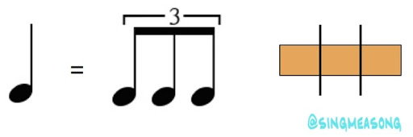

고급
이 파트는 어느정도 숙련된 사람이 읽는것을 추천합니다. 이 단원을 넘기고 싶으시다면 다음 장으로 넘어가셔도 괜찮습니다.
비트

n비트(4비트, 8비트 등)은 n분음표를 뜻합니다. 즉 4비트는 4분음표만큼의 간격입니다. 위 그림에서 1에 해당하는 간격은 4비트, 2에 해당하는 간격은 8비트, 3에 해당하는 간격은 16비트 입니다.

12비트의 경우, 4비트를 3개로 나눈 박자입니다.
4분음표는 한 박자 라고도 표현하는데, (8분음표는 반 박자) 4분음표를 1/1, 8분음표를 1/2, 16분음표를 1/4 로 표현하는 경우도 있습니다. (12비트는 1/3)
연타

연타(2연타 3연타 등)는 같은 간격의 노트가 2개 이상 연달아 오는 패턴을 의미합니다. 위의 사진은 각각 3연타, 3연타, 5연타 입니다. 영어로는 2연타는 Doublet, 3연타는 Triplet, 그 이상은 N-plet 혹은 N-tuple 혹은 N Tuplet이라고 부릅니다. (주로 N-plet이 사용됨) (부정확함)
스트림
스트림입니다. 기차라고도 부릅니다. 같은 간격의 노트가 긴 시간동안 연달아 오는 패턴을 의미합니다. 영어로는 Stream이라고 합니다.

복합스트림 입니다. 복합 기차라고도 부릅니다. 스트림 패턴에 추가적으로 박자가 바뀌는 경우 복합 스트림이라고 부릅니다.
판정 오차 미터

판정 오차 미터입니다. 노트를 빠르게 처리한 경우 왼쪽에, 느리게 처리한 경우 오른쪽에 선이 표시됩니다.
오프셋

오프셋입니다. 곡의 시작지점입니다. 만약 판정 오차미터가 한 쪽으로 쏠린 경우, -키와 +키를 이용하여 오프셋을 조절할 수 있습니다. 왼쪽으로 쏠린 경우 -키, 오른쪽으로 쏠린경우 +키를 사용하여 조절할 수 있습니다. alt키와 -키를 동시에 눌러서 1ms단위로 조절할 수 있습니다.